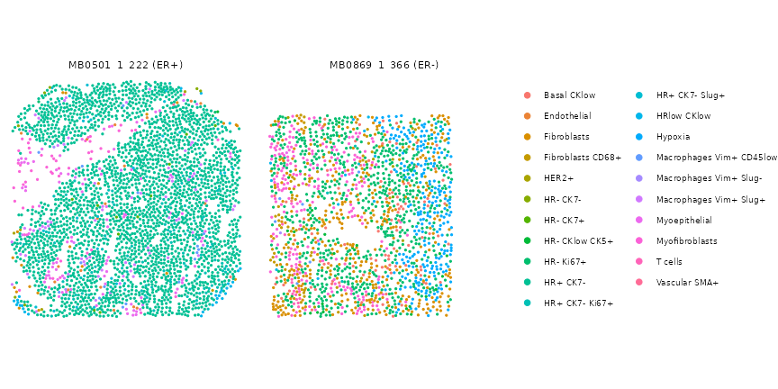
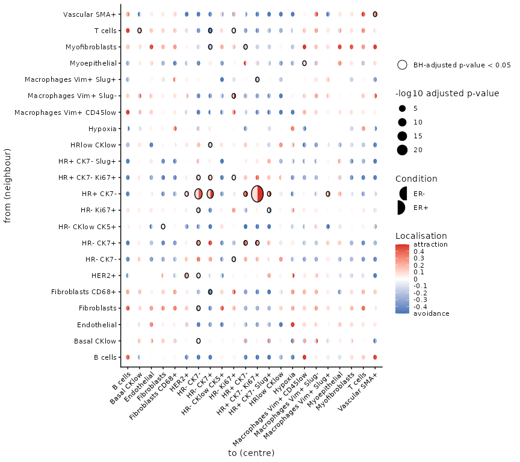
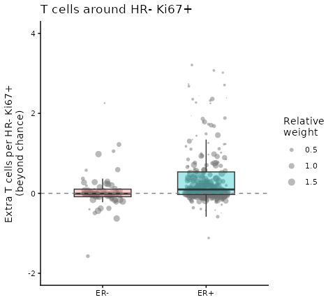
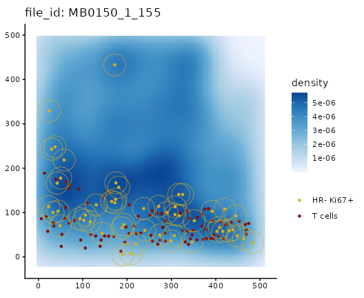
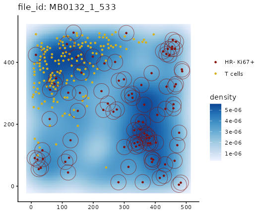
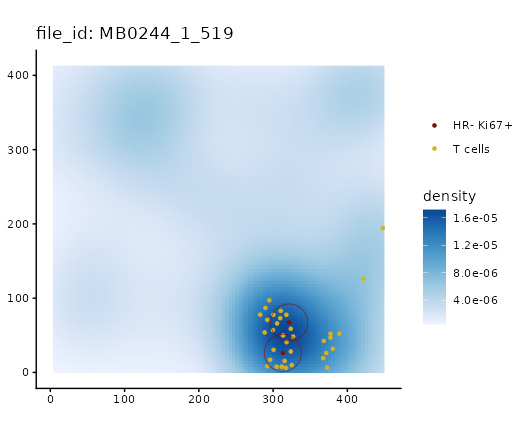
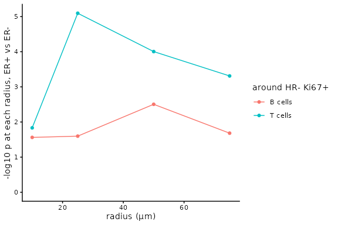
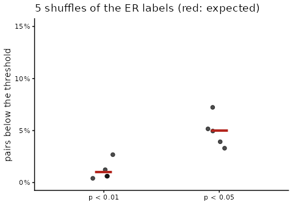

Introduction to spicyR
Ellis Patrick
School of Mathematics and Statistics, and Westmead Institute for Medical Research, University of Sydney, AustraliaSadiq Dohadwalla
School of Mathematics and Statistics, University of Sydney, AustraliaElijah Willie
School of Mathematics and Statistics, University of Sydney, AustraliaNicolas Canete
Westmead Institute for Medical Research, University of Sydney, Australia10 October 2026
Source:vignettes/spicyR.Rmd
spicyR.RmdAbstract
Do T cells gather around tumour cells more in ER-positive breast cancers than in ER-negative ones? Do patients whose tumour cells are surrounded by immune cells relapse later? spicyR answers questions like these for every pair of cell types in an imaging study. This vignette works through a study of 456 breast tumours: testing every pair, looking closely at one, finding the images behind the result, and checking that the test behaves when there is nothing to find.
Introduction
A pair is written from → to and asks
whether to cells are placed near from cells
more than other cells are. For each to cell, spicyR checks
whether there is a from cell within a radius, and compares
the share of to cells that have one with what we would
expect if the to cells were a random choice among the cells
of the same image that are not from cells. The effect is
the fraction of to cells placed next to
from cells, beyond chance: 0.2 means as if a fifth
of the to cells had been moved next to from
cells and the rest left where chance would put them. For a pair whose
to cells avoid the from cells (fewer have one
nearby than chance, over all images), the effect is measured the other
way: -0.2 means as if a fifth of the to cells that chance
would put next to a from cell had been moved away. The
side column says which scale a pair uses. Each
to cell counts once, however many from cells
are beside it, so more numerous or more tightly packed from
cells do not inflate the effect. Because the comparison uses only the
cells that are actually there, empty regions such as holes or air
spaces, and uneven cell density, do not by themselves create a signal
(artefacts that affect one cell type more than others are not removed).
spicyR then compares the effect between groups of patients, treating
patients, not images or cells, as the units of the test.
Pairs are directional. Tumour cells → T cells asks whether T cells are placed near tumour cells (the extra fraction of T cells with a tumour cell nearby), which is a different question from T cells → tumour cells (are tumour cells placed near T cells?).
spicyR needs the type and position of every cell, as from imaging mass cytometry, CODEX, MIBI, Xenium, CosMx or MERSCOPE; it is not designed for spot-based data such as Visium.
Other Bioconductor packages also study how cell types are arranged. imcRtools tests interactions between cell types within each image by permutation, spatialFDA compares spatial summary functions between samples with functional models, and panoramic compares a co-localisation statistic across samples. spicyR is built for the comparison between groups of patients: it measures co-localisation against random labelling of the cells actually present, on a scale that more numerous or more tightly packed cells do not inflate, treats patients as the units, and uses a test designed to keep false positives at the nominal rate with modest numbers of patients. It also relates co-localisation to survival. It works alongside other SydneyBioX packages: per-image statistics from Statial can be compared between groups with spicyR’s image-level test, and lisaClust finds spatial regions.

The pair T cells → proliferating tumour cells. For each proliferating
tumour cell (red, the to type), spicyR checks whether a T
cell (blue, the from type) lies within 25 µm, and compares
the share of tumour cells that have one with chance. Each patient gets
an effect, and the effect is compared between ER-negative and
ER-positive tumours.
Installation
spicyR 2.0, described here, is in the development version of Bioconductor and will be in its next release. Install it with BiocManager, using Bioconductor devel, or from GitHub:
if (!requireNamespace("BiocManager", quietly = TRUE)) install.packages("BiocManager")
BiocManager::install("spicyR", version = "devel")
# or, from GitHub
BiocManager::install("SydneyBioX/spicyR")The data
We use imaging mass cytometry of breast tumours from the METABRIC
cohort (Ali et al. 2020). Each of the 456
patients with known oestrogen receptor (ER) status contributed one
tumour core, and the authors assigned each cell to one of 22 types.
Their labels name tumour cells by marker: HR is hormone receptor, CK
cytokeratin, and Ki67+ marks proliferating cells, so
HR- Ki67+ are proliferating hormone-receptor-negative
tumour cells. The data are a SpatialExperiment in the
SpatialDatasets package, with coordinates in micrometres.
spe <- spe_Ali_2020()
spe <- spe[, spe$ER.Status %in% c("neg", "pos")]
spe$ER <- factor(ifelse(spe$ER.Status == "pos", "ER+", "ER-"), levels = c("ER-", "ER+"))
table(unique(as.data.frame(SummarizedExperiment::colData(spe))[, c("metabricId", "ER")])$ER)
#>
#> ER- ER+
#> 83 373
sort(table(spe$description), decreasing = TRUE)
#>
#> HR+ CK7- Myofibroblasts Fibroblasts
#> 114828 57295 49043
#> HR- CK7- HR- CK7+ HRlow CKlow
#> 34951 29432 22824
#> T cells HR+ CK7- Ki67+ Fibroblasts CD68+
#> 19218 17203 13716
#> HR- Ki67+ HR+ CK7- Slug+ Macrophages Vim+ Slug-
#> 13062 7417 6721
#> Hypoxia Myoepithelial HER2+
#> 5639 4637 4434
#> Macrophages Vim+ Slug+ Macrophages Vim+ CD45low Endothelial
#> 3657 3600 3480
#> B cells Basal CKlow Vascular SMA+
#> 3232 3226 2908
#> HR- CKlow CK5+
#> 2106
cells <- data.frame(SummarizedExperiment::colData(spe), SpatialExperiment::spatialCoords(spe))
size <- table(cells$file_id) # show the largest core of each group
twoCores <- sapply(c("ER-", "ER+"), function(g) { k <- unique(cells$file_id[cells$ER == g]); k[which.max(size[k])] })
oneEach <- cells[cells$file_id %in% twoCores, ]
oneEach$core <- paste0(oneEach$file_id, " (", oneEach$ER, ")")
ggplot(oneEach, aes(Location_Center_X, Location_Center_Y, colour = description)) +
geom_point(size = 0.5) +
facet_wrap(~ core) +
coord_equal() +
labs(colour = NULL) +
theme_void() +
theme(legend.text = element_text(size = 7)) +
guides(colour = guide_legend(override.aes = list(size = 2)))
Testing every pair of cell types
spicy() needs the column of the condition, the column of
the patient (subject) and a radius. It accepts a
SpatialExperiment, a SingleCellExperiment or a
data.frame with one row per cell. By default it looks for
columns called imageID and cellType; here we
name the dataset’s own columns. The coordinates of a
SpatialExperiment are taken from
spatialCoords().
Choosing the radius. Choose it before looking at the results, from the scale at which you expect cells to interact: 10 to 25 µm for contact, 50 to 100 µm for a shared neighbourhood. Here we use 25 µm, about two to three cell diameters. If you are unsure, give several radii (see Which radius?).
res <- spicy(spe, condition = "ER", subject = "metabricId", r = 25,
imageID = "file_id", cellType = "description")
res
#> spicyR (cell-level test): 484 pairs, ER+ vs ER-, r = 25
#> Units: 456 patients with 456 images
#> BH-adjusted p < 0.05: 32 pairs
#> See topPairs() and $cellResults.All 484 ordered pairs of cell types are tested, in a few seconds on
one core; run time and memory grow roughly in proportion to the number
of cells and to the radius. topPairs() lists the most
significant. intercept is the average effect in ER−
patients, and coefficient is the difference in average
effect between ER+ and ER− patients (ER+ minus ER−), as a fraction of
the to cells. P-values are adjusted across all pairs by the
Benjamini–Hochberg method.
topPairs(res, n = 8)
#> intercept coefficient p.value
#> HR+ CK7-__HR+ CK7- Ki67+ 0.08639859 0.5531196 1.172110e-27
#> HR+ CK7-__HR- CK7- 0.08379497 0.3442016 2.248345e-18
#> HR+ CK7-__HR- CK7+ 0.10192807 0.3891642 5.945517e-16
#> HR+ CK7-__HR+ CK7- 0.23885209 0.3610648 2.715205e-10
#> HR+ CK7-__Macrophages Vim+ Slug+ 0.04024329 0.3062466 8.245658e-10
#> HR+ CK7-__HR+ CK7- Slug+ 0.05158642 0.4593989 6.446949e-09
#> HR+ CK7- Ki67+__HR- CK7+ 0.23540053 -0.2109359 1.192526e-08
#> HR- CK7+__HR+ CK7- Ki67+ 0.41525086 -0.3228532 4.823138e-08
#> adj.pvalue from
#> HR+ CK7-__HR+ CK7- Ki67+ 5.673013e-25 HR+ CK7-
#> HR+ CK7-__HR- CK7- 5.440994e-16 HR+ CK7-
#> HR+ CK7-__HR- CK7+ 9.592100e-14 HR+ CK7-
#> HR+ CK7-__HR+ CK7- 3.285398e-08 HR+ CK7-
#> HR+ CK7-__Macrophages Vim+ Slug+ 7.981797e-08 HR+ CK7-
#> HR+ CK7-__HR+ CK7- Slug+ 5.200539e-07 HR+ CK7-
#> HR+ CK7- Ki67+__HR- CK7+ 8.245464e-07 HR+ CK7- Ki67+
#> HR- CK7+__HR+ CK7- Ki67+ 2.917998e-06 HR- CK7+
#> to
#> HR+ CK7-__HR+ CK7- Ki67+ HR+ CK7- Ki67+
#> HR+ CK7-__HR- CK7- HR- CK7-
#> HR+ CK7-__HR- CK7+ HR- CK7+
#> HR+ CK7-__HR+ CK7- HR+ CK7-
#> HR+ CK7-__Macrophages Vim+ Slug+ Macrophages Vim+ Slug+
#> HR+ CK7-__HR+ CK7- Slug+ HR+ CK7- Slug+
#> HR+ CK7- Ki67+__HR- CK7+ HR- CK7+
#> HR- CK7+__HR+ CK7- Ki67+ HR+ CK7- Ki67+6 of these eight pairs have HR+ CK7- tumour cells as the
from type; we come back to them in Tissue compartments.
The full results are in res$cellResults, with one row
per pair:
| Column | Meaning |
|---|---|
excess_ref, excess_comp
|
average effect in the reference group (ER−) and the comparison group (ER+) |
excess_difference, se,
df
|
their difference, its standard error and degrees of freedom |
p_value, p_adj
|
p-value, and Benjamini–Hochberg adjusted p-value across all pairs |
tau2 |
how much the effect varies between patients within a group |
adjusted_for,
<covariate>_effect
|
with covariates, what the test was adjusted for and the effect of each covariate |
unadjusted_difference, unadjusted_p_value,
unadjusted_p_adj
|
with covariates, the same test without them |
With more than two groups there is one row per pair and group, each
compared with the reference group, in a column level.
Seeing every pair at once
signifPlot() shows the whole study. Read rows as
from and columns as to. Each circle is a pair:
the left half is coloured by the effect in ER− tumours and the right
half by the effect in ER+ tumours (red: more to cells next
to from cells than chance, blue: fewer), the size reflects
the p-value, and a black ring marks a BH-adjusted p-value below
0.05.
signifPlot(res, fdr = TRUE, breaks = c(-0.5, 0.5, 0.1))
Looking at one pair
We focus on an immune pair, T cells → HR- Ki67+: are
proliferating hormone-receptor-negative tumour cells placed near T
cells? Its effect is the extra fraction of these tumour cells with a T
cell within 25 µm.
onePair <- res$cellResults["T cells__HR- Ki67+", c("excess_ref", "excess_comp", "excess_difference", "p_value", "p_adj")]
onePair
#> excess_ref excess_comp excess_difference p_value
#> T cells__HR- Ki67+ 0.02747419 0.1387424 0.1112682 0.0008112119
#> p_adj
#> T cells__HR- Ki67+ 0.01963133In ER− tumours these tumour cells have a T cell nearby barely more often than chance would give (0.03). In ER+ tumours the effect is 0.14, as if about one in 7 of them had been placed next to T cells.
spicyBoxPlot() shows the effect in each image (here one
image per patient), with a point per image behind each box. Points are
sized by how much the image contributes to the test.
spicyBoxPlot(res, from = "T cells", to = "HR- Ki67+")
With interactive = TRUE the plot is a plotly widget:
hover over a point to see which image it is. (It is shown on the package
website; it is left out of the vignette installed with the package
to keep it small.)
spicyBoxPlot(res, from = "T cells", to = "HR- Ki67+", interactive = TRUE)This is an association in one cohort; it does not show that T cells attract the tumour cells, or the reverse.
bind() returns the per-image values as a table, for your
own plots or models. Images without any HR- Ki67+ cells
carry no information about the pair (NA).
head(bind(res, pairName = "T cells__HR- Ki67+"))
#> imageID condition subject T cells__HR- Ki67+
#> 1 MB0000_1_527 ER+ MB-0000 NA
#> 2 MB0002_1_345 ER+ MB-0002 -0.01092896
#> 3 MB0005_1_211 ER+ MB-0005 -0.01305970
#> 4 MB0010_1_420 ER+ MB-0010 0.25661632
#> 5 MB0013_1_371 ER+ MB-0013 NA
#> 6 MB0014_1_326 ER+ MB-0014 0.48000000Looking at the images
plotImage() shows one image: the density of all cells in
blue, the from cells in gold and the to cells
in dark red. With r, it draws the circle around each
to cell inside which spicyR looks for from
cells. We look at three images found with the interactive box plot.
pair <- "T cells__HR- Ki67+"
examples <- c("MB0150_1_155", "MB0132_1_533", "MB0244_1_519")
i <- match(examples, res$imageID)
ex <- data.frame(image = examples, ER = res$condition[i], effect = res$pairwiseAssoc[[pair]][i],
weight = res$imageWeights[[pair]][i])
ex
#> image ER effect weight
#> 1 MB0150_1_155 ER+ 0.67741935 0.005465210
#> 2 MB0132_1_533 ER- -0.07907636 0.017187607
#> 3 MB0244_1_519 ER+ 1.00000000 0.001009923
for (im in examples)
print(plotImage(spe, im, from = "T cells", to = "HR- Ki67+", imageID = "file_id", cellType = "description",
r = 25) + labs(x = NULL, y = NULL, color = NULL))


In the ER+ image on the left, the T cells run along the band of tumour cells at the bottom: an effect of 0.68, as if that fraction of the tumour cells had been placed next to T cells. In the ER− image in the middle, the T cells are concentrated top left, apart from most of the tumour cells, and slightly fewer tumour cells have a T cell nearby than chance would give (-0.08). The ER+ image on the right reaches the largest possible value, 1, but only because its two tumour cells both happen to sit in a cluster of T cells.
Point size matters. The right-hand image sits at the
top of the box plot, but its weight is close to zero: an effect
estimated from two cells says little. Weights also level off. Once an
image has a few dozen to cells, more cells add little,
because the differences between patients outweigh the noise within an
image. The weights are in res$imageWeights.
Tissue compartments
The most significant pairs have HR+ CK7- tumour cells as
the from type. These cells make up about a quarter of the
cells in a typical ER+ core and almost none in ER− cores. In ER+ tumours
they make up much of the tumour tissue and the other tumour cells sit
among them, so far more of those cells have an HR+ CK7-
cell nearby than if they had been placed at random among all the other
cells, stroma included.
tab <- res$cellResults[res$cellResults$from == "HR+ CK7-", ]
head(tab[order(tab$p_value), c("to", "excess_ref", "excess_comp", "p_adj")], 6)
#> to excess_ref excess_comp
#> HR+ CK7-__HR+ CK7- Ki67+ HR+ CK7- Ki67+ 0.08639859 0.6395181
#> HR+ CK7-__HR- CK7- HR- CK7- 0.08379497 0.4279966
#> HR+ CK7-__HR- CK7+ HR- CK7+ 0.10192807 0.4910923
#> HR+ CK7-__HR+ CK7- HR+ CK7- 0.23885209 0.5999169
#> HR+ CK7-__Macrophages Vim+ Slug+ Macrophages Vim+ Slug+ 0.04024329 0.3464899
#> HR+ CK7-__HR+ CK7- Slug+ HR+ CK7- Slug+ 0.05158642 0.5109853
#> p_adj
#> HR+ CK7-__HR+ CK7- Ki67+ 5.673013e-25
#> HR+ CK7-__HR- CK7- 5.440994e-16
#> HR+ CK7-__HR- CK7+ 9.592100e-14
#> HR+ CK7-__HR+ CK7- 3.285398e-08
#> HR+ CK7-__Macrophages Vim+ Slug+ 7.981797e-08
#> HR+ CK7-__HR+ CK7- Slug+ 5.200539e-07
ki67 <- tab["HR+ CK7-__HR+ CK7- Ki67+", ]In ER+ tumours the effect for proliferating
HR+ CK7- Ki67+ cells is 0.64, against 0.09 in ER− tumours,
while fibroblasts and T cells are placed away from HR+ CK7-
cells (where HR+ CK7- cells are rare, as in ER− cores, an
effect cannot fall far below zero). These are real differences in
arrangement, but they describe the structure of the tissue (tumour cells
sit with tumour cells) more than an interaction between particular cell
types.
To ask about arrangement within a compartment, for example whether
proliferating tumour cells sit closer to HR+ CK7- cells
than other tumour cells do, compare with random labelling among the
tumour cells only. The Kontextual test in the Statial package
does this.
Allocation or count?
By default spicyR asks whether each to cell has a
from cell nearby. With effect = "count" it
asks how many: the effect is then the number of extra from
cells within the radius of each to cell.
resCount <- spicy(spe, condition = "ER", subject = "metabricId", r = 25,
imageID = "file_id", cellType = "description", effect = "count")
onePairCount <- resCount$cellResults[pair, c("excess_ref", "excess_comp", "excess_difference", "p_value", "p_adj")]
onePairCount
#> excess_ref excess_comp excess_difference p_value
#> T cells__HR- Ki67+ 0.04385209 0.291235 0.247383 6.653874e-05
#> p_adj
#> T cells__HR- Ki67+ 0.001533559In ER+ tumours each proliferating tumour cell has about 0.29 extra T
cells within 25 µm, against 0.04 in ER− tumours. The count also reflects
how many T cells surround each tumour cell, but it grows with how
tightly the from cells are packed: if T cells form denser
clusters in one group, each tumour cell next to a cluster counts more T
cells. The default effect counts each tumour cell once, however many T
cells are beside it, so denser clusters do not inflate it.
Use the default when your question is whether to cells
are placed next to from cells. Use
effect = "count" when the number of from cells
around each to cell is the question, keeping in mind that
it also rises when the from cells are packed more tightly.
adjustAbundance = TRUE adds the log share of the
from type in each image to the model, so that groups are
compared at the same abundance; it does not account for how tightly the
from cells are packed, and when that share differs strongly
between groups, as for HR+ CK7- here, it leaves little
power.
Patients with several images
Each METABRIC patient has one core. When patients contribute several
images, give the patient column as subject: the images of
each patient are combined, and patients remain the units of the test.
The package’s diabetesData has 10 images from each of 12
pancreas donors (Damond et
al. 2019); here we compare the 4 donors at the onset of
type 1 diabetes with the 4 non-diabetic donors.
data("diabetesData")
diabetes <- diabetesData[, diabetesData$stage %in% c("Non-diabetic", "Onset")]
diabetes$stage <- droplevels(diabetes$stage)
resDonors <- spicy(diabetes, condition = "stage", subject = "case", r = 50)
resDonors
#> spicyR (cell-level test): 222 pairs, Onset vs Non-diabetic, r = 50
#> Units: 8 patients with 80 images
#> BH-adjusted p < 0.05: 0 pairs
#> See topPairs() and $cellResults.No pair is significant with the 8 donors as the units. Leaving out
subject treats each of the 80 images as a separate
patient:
resImages <- spicy(diabetes, condition = "stage", r = 50)
resImages
#> spicyR (cell-level test): 222 pairs, Onset vs Non-diabetic, r = 50
#> Units: 80 images (no subject given: each image is a patient)
#> BH-adjusted p < 0.05: 6 pairs
#> See topPairs() and $cellResults.Treating every image as an independent patient overstates the
evidence: images from one donor are alike, and here it turns up 6 pairs
that the donors do not support. Always give subject when
patients have several images.
Adjusting for clinical covariates
Covariates measured per patient or per image are added with
covariates. Here we also adjust the ER comparison for age
at diagnosis and tumour grade.
spe$Grade <- factor(spe$Grade)
resCov <- spicy(spe, condition = "ER", subject = "metabricId", r = 25,
imageID = "file_id", cellType = "description",
covariates = c("Age.At.Diagnosis", "Grade"))
resCov
#> spicyR (cell-level test): 484 pairs, ER+ vs ER-, r = 25
#> Units: 456 patients with 456 images
#> Adjusted for: covariates (unadjusted test in the unadjusted_* columns)
#> 3 pairs could not be adjusted and are reported unadjusted (see adjusted_for)
#> BH-adjusted p < 0.05: 20 pairs (32 without adjustment)
#> See topPairs() and $cellResults.The main columns (excess_difference,
p_value, p_adj) are now the ER comparison
adjusted for age and grade. Each covariate also has its own effect and
p-value. A factor has one per level after the first: Grade2
and Grade3 compare grades 2 and 3 with grade 1.
covPair <- resCov$cellResults[pair, c("excess_difference", "p_value", "Age.At.Diagnosis_effect",
"Age.At.Diagnosis_p_value", "Grade2_effect", "Grade2_p_value",
"Grade3_effect", "Grade3_p_value")]
covPair
#> excess_difference p_value Age.At.Diagnosis_effect
#> T cells__HR- Ki67+ 0.1141102 0.001119668 0.001110613
#> Age.At.Diagnosis_p_value Grade2_effect Grade2_p_value
#> T cells__HR- Ki67+ 0.1991637 0.01812245 0.7580963
#> Grade3_effect Grade3_p_value
#> T cells__HR- Ki67+ 0.02406923 0.6758552The difference between ER+ and ER− patients is much the same after adjusting for age and grade, and neither has a clear effect of its own on this pair. Patients with a missing covariate are left out of the adjusted test.
A pair that cannot be adjusted, for example because its cell types
appear in images of only one grade, is reported unadjusted, and its
adjusted_for column says why. The printed summary above
counts these pairs.
Restricting from and to does not change the
results for the pairs that are tested.
Which radius?
The scale of an interaction is rarely known in advance. Give several
radii and spicyR tests them together, using a max-T test that accounts
for the strong correlation between neighbouring radii
(combine = "cauchy", the Cauchy combination of Liu and Xie (2020), is an alternative).
resR <- spicy(spe, condition = "ER", subject = "metabricId", r = c(10, 25, 50, 75),
imageID = "file_id", cellType = "description")
resR$cellResults[c("T cells__HR- Ki67+", "B cells__HR- Ki67+"), c("r", "excess_difference", "p_value")]
#> r excess_difference p_value
#> T cells__HR- Ki67+ 25 0.11126824 0.002810088
#> B cells__HR- Ki67+ 25 0.05391739 0.017986567r is the radius with the strongest evidence, and
p_value the combined p-value over all radii.
The effect depends on the radius: at a larger radius more cells have
a from cell nearby by chance, and the effect describes
placement at that scale. Where most cells have a from cell
nearby by chance, there is little room for an effect and it is noisy.
Compare p-values across radii rather than the size of the effect. The
effect at the chosen radius is a little optimistic, because that radius
was picked for its strength.
profile <- resR$radiusResults[resR$radiusResults$to == "HR- Ki67+" &
resR$radiusResults$from %in% c("T cells", "B cells"), ]
ggplot(profile, aes(r, -log10(p_value), colour = from)) +
geom_line() +
geom_point() +
expand_limits(y = 0) +
labs(x = "radius (µm)", y = "-log10 p at each radius, ER+ vs ER-", colour = "from (to: HR- Ki67+)") +
theme_classic()
Is co-localisation associated with survival?
With a Surv column as the condition, spicyR asks whether
a patient’s effect is associated with their outcome. Here we use
relapse-free survival, adjusting for age.
spe$RFS <- Surv(spe$timeRFS, spe$eventRFS)
resS <- spicy(spe, condition = "RFS", subject = "metabricId", r = 25,
imageID = "file_id", cellType = "description", covariates = "Age.At.Diagnosis")
resS
#> spicyR (cell-level test): 484 pairs, association with survival, r = 25
#> Units: 456 patients with 456 images
#> Adjusted for: covariates
#> BH-adjusted p < 0.05: 5 pairs
#> See topPairs() and $cellResults.
head(resS$cellResults[order(resS$cellResults$p_value),
c("from", "to", "p_value", "p_adj", "hazard_ratio_sd")])
#> from to
#> HR+ CK7-__HR- CK7+ HR+ CK7- HR- CK7+
#> HR+ CK7-__HR+ CK7- Ki67+ HR+ CK7- HR+ CK7- Ki67+
#> HRlow CKlow__HR- CK7+ HRlow CKlow HR- CK7+
#> HR- CK7+__HRlow CKlow HR- CK7+ HRlow CKlow
#> HR+ CK7-__Endothelial HR+ CK7- Endothelial
#> Myoepithelial__Macrophages Vim+ CD45low Myoepithelial Macrophages Vim+ CD45low
#> p_value p_adj
#> HR+ CK7-__HR- CK7+ 1.827938e-05 0.006368902
#> HR+ CK7-__HR+ CK7- Ki67+ 2.631778e-05 0.006368902
#> HRlow CKlow__HR- CK7+ 1.023385e-04 0.016510605
#> HR- CK7+__HRlow CKlow 1.412169e-04 0.017087248
#> HR+ CK7-__Endothelial 4.753616e-04 0.046015003
#> Myoepithelial__Macrophages Vim+ CD45low 9.760336e-04 0.078733374
#> hazard_ratio_sd
#> HR+ CK7-__HR- CK7+ 0.6473083
#> HR+ CK7-__HR+ CK7- Ki67+ 0.6783083
#> HRlow CKlow__HR- CK7+ 0.6691627
#> HR- CK7+__HRlow CKlow 0.7081093
#> HR+ CK7-__Endothelial 1.5313635
#> Myoepithelial__Macrophages Vim+ CD45low 0.6410587The p-value comes from a score test that relates each patient’s
effect to their outcome. hazard_ratio_sd is the hazard
ratio for a one standard deviation higher effect, from a Cox model;
below one, patients with a higher effect had a lower risk of relapse. It
is missing when the effect barely varies between patients.
5 pairs are significant after adjusting for multiple testing. The two
strongest have HR+ CK7- tumour cells as the
from type: patients in whom more of the other tumour cells
sat next to HR+ CK7- cells relapsed later. These cells are
typical of ER+ tumours, and ER status is itself related to relapse, so
we add it to the covariates.
resSER <- spicy(spe, condition = "RFS", subject = "metabricId", r = 25,
imageID = "file_id", cellType = "description", covariates = c("Age.At.Diagnosis", "ER"))
resSER
#> spicyR (cell-level test): 484 pairs, association with survival, r = 25
#> Units: 456 patients with 456 images
#> Adjusted for: covariates
#> BH-adjusted p < 0.05: 0 pairs
#> See topPairs() and $cellResults.No pair remains significant: these pairs say little about relapse beyond the tumour’s ER status.
A check you can run
A test should give few significant results when there is nothing to find. Shuffling the ER labels across patients removes any real difference, so about 5% of pairs should then have p < 0.05, and about 1% p < 0.01.
set.seed(2026)
patients <- unique(as.data.frame(SummarizedExperiment::colData(spe))[, c("metabricId", "ER")])
shuffles <- do.call(rbind, lapply(1:10, function(i) {
label <- setNames(sample(patients$ER), patients$metabricId)
spe$shuffled <- label[spe$metabricId]
s <- spicy(spe, condition = "shuffled", subject = "metabricId", r = 25,
imageID = "file_id", cellType = "description")
data.frame(shuffle = i, threshold = c("p < 0.05", "p < 0.01"),
percent = 100 * c(mean(s$cellResults$p_value < 0.05), mean(s$cellResults$p_value < 0.01)))
}))
calibration <- aggregate(percent ~ threshold, shuffles, mean)
calibration
#> threshold percent
#> 1 p < 0.01 1.446281
#> 2 p < 0.05 6.074380
ggplot(shuffles, aes(threshold, percent)) +
geom_jitter(width = 0.1, height = 0, size = 2, alpha = 0.7) +
geom_point(data = data.frame(threshold = c("p < 0.05", "p < 0.01"), percent = c(5, 1)),
shape = 95, size = 14, colour = "#b3261e") +
scale_y_continuous(limits = c(0, 15), labels = function(v) paste0(v, "%")) +
labs(x = NULL, y = "pairs below the threshold", title = "10 shuffles of the ER labels (red: expected)") +
theme_classic()
On average 6.1% of pairs have p < 0.05 and 1.4% have p < 0.01, close to the expected 5% and 1%. Pairs share cells, so the percentage moves by a few points from one shuffle to the next.
Run this check on your own data before trusting a discovery. It takes a few minutes and shows whether the test is calibrated for your study design.
How it works
For a pair from → to and an image, let
O be the number of to cells with at least one
from cell within r, out of n
to cells. If the to cells were a random choice
among the cells of the image that are not from cells,
keeping every cell where it is, O would have an exact mean and
variance, which spicyR computes without permutations. The effect of an
image is
where
is that expectation under random labelling. If a fraction f of
the to cells were placed next to from cells
and the rest at random, δ would estimate f. At radius
r, O/n is the cross-type nearest-neighbour
distribution function G of spatial statistics, and δ compares
it with random labelling, much as the J function compares G
with the empty-space function (van Lieshout and Baddeley 1996). Negative
values mean fewer to cells next to from cells
than chance; they are not a fraction, and the lowest possible value,
,
is far below zero only where from cells are common. With
effect = "count", O is instead the sum, over the
to cells, of the number of from cells within
r of each, and the denominator is n, an analogue of
Ripley’s K function.
Images from the same patient are combined, giving more weight to more
informative images (usually those with more to cells). Each
patient has its own true effect, which varies around its group’s mean by
an amount estimated from the data (a frailty, or random-effects, model,
with the between-patient variance estimated as by Paule and Mandel (1982)). The difference between
groups, adjusted for any covariates, is tested with a small-sample
cluster-robust (CR2) variance on Satterthwaite degrees of freedom (Bell and McCaffrey 2002; Pustejovsky and Tipton
2018), with patients as the clusters. This is designed to keep
false positives near the nominal rate even with modest numbers of
patients. With labelClustering = TRUE, the within-image
variance is inflated when the to cells cluster among
themselves. A paper describing the method is in preparation.
Small studies
With fewer than about ten patients per group, expect few significant
pairs, even when an effect is consistent across patients: a calibrated
test cannot be confident with little information. Look at whether the
patients agree in direction with spicyBoxPlot().
variance = "hartung_knapp" (Hartung and Knapp 2001) can give more power in
very small studies. It assumes that patients vary about equally in both
groups and can give too many small p-values for rare cell types, so it
is not the default.
Reporting results
A methods sentence might read: “We used spicyR (version 1.99.11) to
test, for every ordered pair of cell types, whether the fraction of
to cells with at least one from cell within 25
µm, relative to random labelling of the cells in each image, differed
between ER+ and ER− patients, with patients as the units of analysis.
P-values were adjusted across pairs by the Benjamini–Hochberg method.”
Show a per-patient plot (spicyBoxPlot()) and an image of
the pair (plotImage()) alongside the p-value.
citation("spicyR")
#> To cite spicyR in publications please use:
#>
#> Canete N, Iyengar S, Ormerod J, Baharlou H, Harman A, Patrick E
#> (2022). "spicyR: spatial analysis of in situ cytometry data in R."
#> _Bioinformatics_, *38*(11), 3099-3105.
#> doi:10.1093/bioinformatics/btac268
#> <https://doi.org/10.1093/bioinformatics/btac268>.
#>
#> A BibTeX entry for LaTeX users is
#>
#> @Article{,
#> title = {{spicyR: spatial analysis of in situ cytometry data in R}},
#> author = {Nicolas Canete and Sourish Iyengar and John Ormerod and Heeva Baharlou and Andrew Harman and Ellis Patrick},
#> year = {2022},
#> volume = {38},
#> number = {11},
#> pages = {3099--3105},
#> journal = {Bioinformatics},
#> doi = {10.1093/bioinformatics/btac268},
#> }Coming from spicyR 1.x
spicyR 2.0 changes the default test. Before 2.0, spicy()
compared a per-image summary of the L-function between groups with a
weighted mixed model (Canete et al. 2022).
That test is still available, and gives the same results as before, with
method = "image"; it is described in the vignette “The
original image-level test in spicyR”. It is also the method to use with
your own per-image statistics (alternateResult), for
example from the Statial package. topPairs(),
signifPlot(), spicyBoxPlot() and
bind() work with both tests.
resImage <- spicy(spe, condition = "ER", subject = "metabricId", method = "image",
imageID = "file_id", cellType = "description",
from = "T cells", to = "HR- Ki67+")
topPairs(resImage)
#> intercept coefficient p.value adj.pvalue from to
#> T cells__HR- Ki67+ 3.722601 -6.981016 0.3419058 0.3419058 T cells HR- Ki67+The image-level test summarises a different statistic, on a different scale, so its coefficient is not comparable with the cell-level effect; here it finds no evidence of a difference either way.
Python
The Python package spicyr runs the same cell-level test on AnnData, SpatialData and pandas objects, on the same C++ code, and gives the same results; its tutorial is this vignette in Python. The names follow Python conventions:
| R (spicyR) | Python (spicyr) |
|---|---|
spicy(spe, condition, subject, imageID =, cellType =, from =, to =) |
spicy(adata, condition, subject, image_id=, cell_type=, from_=, to=) |
condition = "RFS" with a Surv(time, event)
column |
survival=("timeRFS", "eventRFS") |
topPairs(res), res$cellResults
|
res.top_pairs(), res.cell_results
|
signifPlot(res),
spicyBoxPlot(res, from, to), bind(res)
|
res.signif_plot(),
res.box_plot(from_, to), res.bind()
|
plotImage(spe, image, from, to),
res$imageWeights
|
spicyr.plot_image(adata, image, from_, to),
res.image_weights
|
The image-level test is available only in R.
Session information
sessionInfo()
#> R version 4.6.1 (2026-06-24)
#> Platform: x86_64-pc-linux-gnu
#> Running under: Ubuntu 24.04.5 LTS
#>
#> Matrix products: default
#> BLAS: /usr/lib/x86_64-linux-gnu/openblas-pthread/libblas.so.3
#> LAPACK: /usr/lib/x86_64-linux-gnu/openblas-pthread/libopenblasp-r0.3.26.so; LAPACK version 3.12.0
#>
#> locale:
#> [1] LC_CTYPE=C.UTF-8 LC_NUMERIC=C LC_TIME=C.UTF-8
#> [4] LC_COLLATE=C.UTF-8 LC_MONETARY=C.UTF-8 LC_MESSAGES=C.UTF-8
#> [7] LC_PAPER=C.UTF-8 LC_NAME=C LC_ADDRESS=C
#> [10] LC_TELEPHONE=C LC_MEASUREMENT=C.UTF-8 LC_IDENTIFICATION=C
#>
#> time zone: UTC
#> tzcode source: system (glibc)
#>
#> attached base packages:
#> [1] stats4 stats graphics grDevices utils datasets methods
#> [8] base
#>
#> other attached packages:
#> [1] survival_3.8-6 ggplot2_4.0.3
#> [3] SpatialDatasets_1.10.0 SpatialExperiment_1.22.0
#> [5] SingleCellExperiment_1.34.0 SummarizedExperiment_1.42.0
#> [7] Biobase_2.72.0 GenomicRanges_1.64.0
#> [9] Seqinfo_1.2.0 IRanges_2.46.0
#> [11] S4Vectors_0.50.3 MatrixGenerics_1.24.0
#> [13] matrixStats_1.5.0 ExperimentHub_3.2.2
#> [15] AnnotationHub_4.2.2 BiocFileCache_3.2.0
#> [17] dbplyr_2.6.0 BiocGenerics_0.58.1
#> [19] generics_0.1.4 spicyR_1.99.11
#> [21] BiocStyle_2.40.0
#>
#> loaded via a namespace (and not attached):
#> [1] tidyselect_1.2.1 viridisLite_0.4.3 dplyr_1.2.1
#> [4] farver_2.1.2 blob_1.3.0 filelock_1.0.3
#> [7] Biostrings_2.80.2 S7_0.2.2 fastmap_1.2.0
#> [10] digest_0.6.39 lifecycle_1.0.5 KEGGREST_1.52.2
#> [13] RSQLite_3.53.3 magrittr_2.0.5 compiler_4.6.1
#> [16] rlang_1.3.0 sass_0.4.10 tools_4.6.1
#> [19] yaml_2.3.12 data.table_1.18.6.1 knitr_1.52
#> [22] labeling_0.4.3 S4Arrays_1.12.1 htmlwidgets_1.6.4
#> [25] bit_4.6.0 curl_8.0.0 DelayedArray_0.38.2
#> [28] RColorBrewer_1.1-3 abind_1.4-8 purrr_1.2.2
#> [31] withr_3.0.3 desc_1.4.3 grid_4.6.1
#> [34] MASS_7.3-65 scales_1.4.0 cli_3.6.6
#> [37] rmarkdown_2.32 crayon_1.5.3 ragg_1.5.2
#> [40] otel_0.2.0 httr_1.4.9 rjson_0.2.23
#> [43] DBI_1.3.0 cachem_1.1.0 splines_4.6.1
#> [46] AnnotationDbi_1.74.0 BiocManager_1.30.27 XVector_0.52.0
#> [49] vctrs_0.7.3 Matrix_1.7-5 jsonlite_2.0.0
#> [52] bookdown_0.48 bit64_4.8.6 crosstalk_1.2.2
#> [55] systemfonts_1.3.2 magick_2.9.1 plotly_4.12.1
#> [58] tidyr_1.3.2 jquerylib_0.1.4 glue_1.8.1
#> [61] pkgdown_2.2.1 gtable_0.3.6 BiocVersion_3.23.1
#> [64] tibble_3.3.1 pillar_1.11.1 rappdirs_0.3.4
#> [67] htmltools_0.5.9 R6_2.6.1 httr2_1.3.0
#> [70] textshaping_1.0.5 evaluate_1.0.5 lattice_0.22-9
#> [73] png_0.1-9 memoise_2.0.1 bslib_0.12.0
#> [76] Rcpp_1.1.2 SparseArray_1.12.3 xfun_0.61
#> [79] fs_2.1.0 pkgconfig_2.0.3